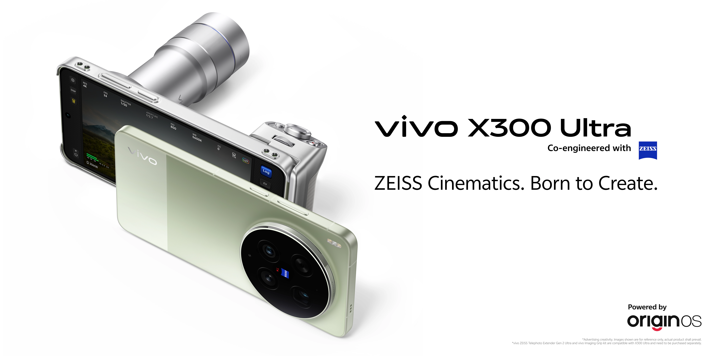

Foundation for
Professional Creation
Spanning the golden focal lengths, the 14 mm ultra-wide captures sweeping scenes with
exceptional light, while the 35 mm and 85 mm lenses deliver 200MP clarity for everything
from documentary to cinematic close-ups. Telephoto extenders further expand your
creative possibilities, with a lightweight 200 mm
Equivalent Gen 2 and a 400 mm Equivalent Gen 2 Ultra.